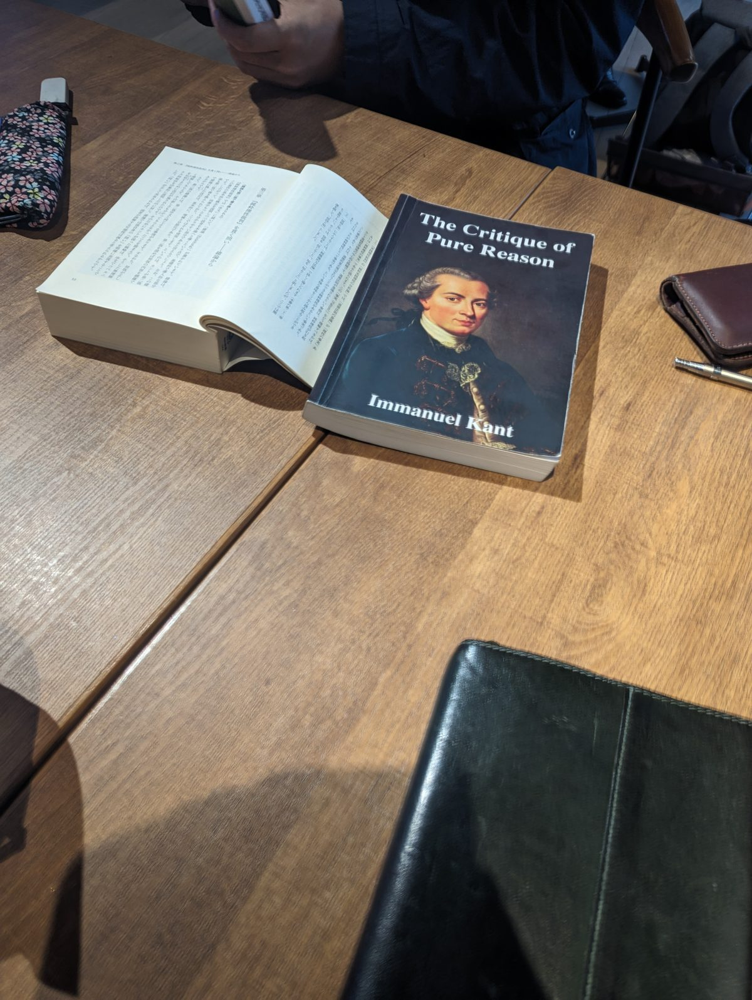

活動毎週1回
場所福岡市内（申し込み後にご案内）
読む本哲学書・心理学書（希望を募集中）
初めての方見学から。一回だけでも
読みたい本を教えてください
次に読む本は、参加する人の希望を聞いて決めます。「この本を一度ちゃんと読みたい」「この章だけでも」という希望があれば、申し込みフォームの「読みたい本」の欄に書いてください。書名だけで構いません。申し込みフォームへ
ABOUTこの会について
01
テキストをじっくり読む
感想を言い合うだけでなく、本に書かれていることを一文ずつ確かめながら読みます。わからないところは、みんなで考えます。
02
毎週活動しています
週に一度集まって、少しずつ読み進めます。毎週続けるから、一人では挫折しがちな大著も最後まで読み通せます。
03
2〜3人の少人数
いまは2〜3人で、机を囲んでゆっくり読んでいます。大人数の読書会のように身構える必要はありません。分からないところは、その場で気軽に聞いてください。
FOR FIRST-TIMERS初めての方へ
聞いているだけで大丈夫
最初の回は、みんなの読み方を見ているだけで構いません。慣れてきたら「ここがわからない」と言うところから始めてください。それがこの会でいちばん歓迎される発言です。
本を持っていなくても
いま読んでいる本や進み具合は、お申し込み後のメールでお伝えします。見学の時点で読んでいなくても、持っていなくても大丈夫です。
一人で来て大丈夫
友人を誘う必要はありません。毎回の参加を約束する必要もありません。都合のつく週に来てください。
SCENE活動の様子

カントの『純粋理性批判』を読んだときの様子です。解説書や英訳など、それぞれが手元のテキストを持ち寄り、見比べながら読み進めました。
一人では読み進めにくい大著も、毎週みんなで言葉の意味を確かめながら読めば、着実に前に進みます。
HOW TO JOIN参加の流れ
- フォームから送る（1分）お名前とメールアドレスがあれば送れます。「見学したい」「質問がある」だけでも構いません。
- メールでご案内します活動の曜日・時間・場所、いま読んでいる本と進み具合、当日の持ち物をお知らせします。
- まずは見学実際の様子を見てから、続けるかどうか決めてください。その場で決めなくても大丈夫です。
FAQよくある質問
- 哲学や心理学の知識がなくても大丈夫ですか？
- 大丈夫です。予備知識は問いません。わからないところを質問しながら読むのが、この会の読み方です。
- どんな読み方をしていますか？
- 感想を言い合うだけでなく、テキストに書かれている内容をきちんと読み取ることを大切にしています。わからないことは、遠慮なく聞いてください。
- どこで、いつ集まっていますか？
- 福岡市内で毎週活動しています。くわしい日時と場所は、お問い合わせのあとにメールでお知らせします。
- 途中から参加しても読書についていけますか？
- 読んでいる本や進み具合はご連絡のときにお伝えします。その日に読む範囲をその場で一緒に読むので、前の回を知らなくても参加できます。
- 人前で話すのが苦手です。発言しないといけませんか？
- いいえ。聞いているだけの参加で大丈夫です。順番に意見を求めることもしません。
- 一人で参加しても大丈夫ですか？
- 大丈夫です。2〜3人の少人数なので、一人で来ても浮きません。
- 毎週来ないといけませんか？
- 来られる週だけで構いません。一回だけの見学も、しばらく空いてからの参加も歓迎です。
- 本を読んでいなくても参加できますか？
- 見学の回は読んでいなくて大丈夫です。続けて参加される場合は、読んでいる本をご案内しますので、お手元に用意してください。
CONTACT見学を申し込む・質問する
「見学したい」「ちょっと聞いてみたい」だけで大丈夫です。1分ほどで送れます。返信はメールでお送りします。